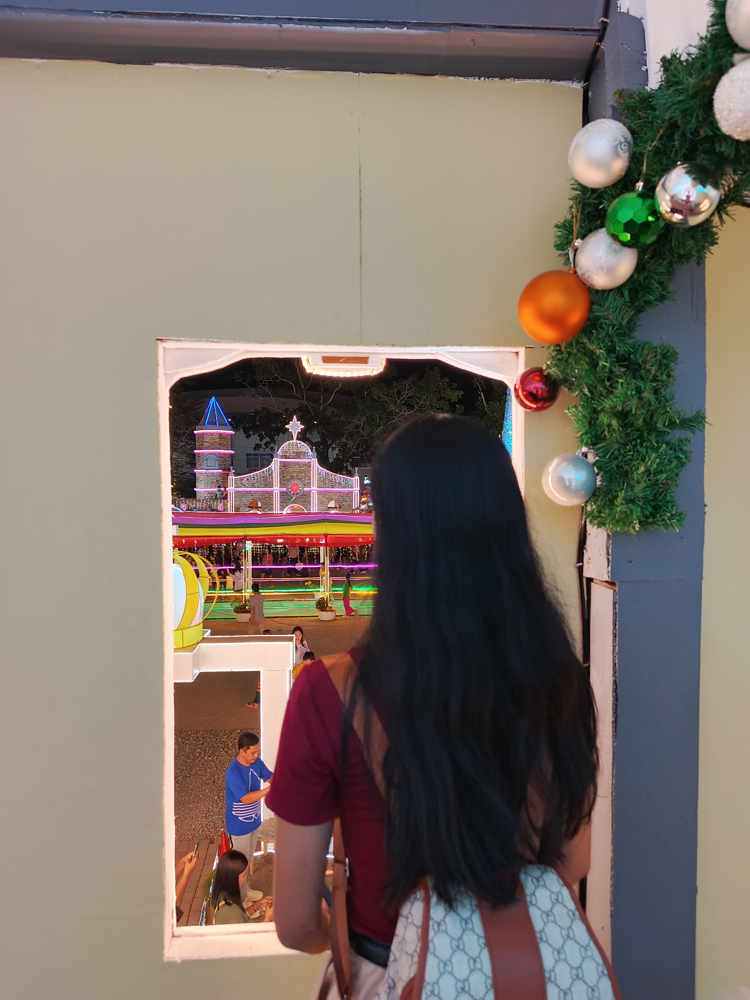
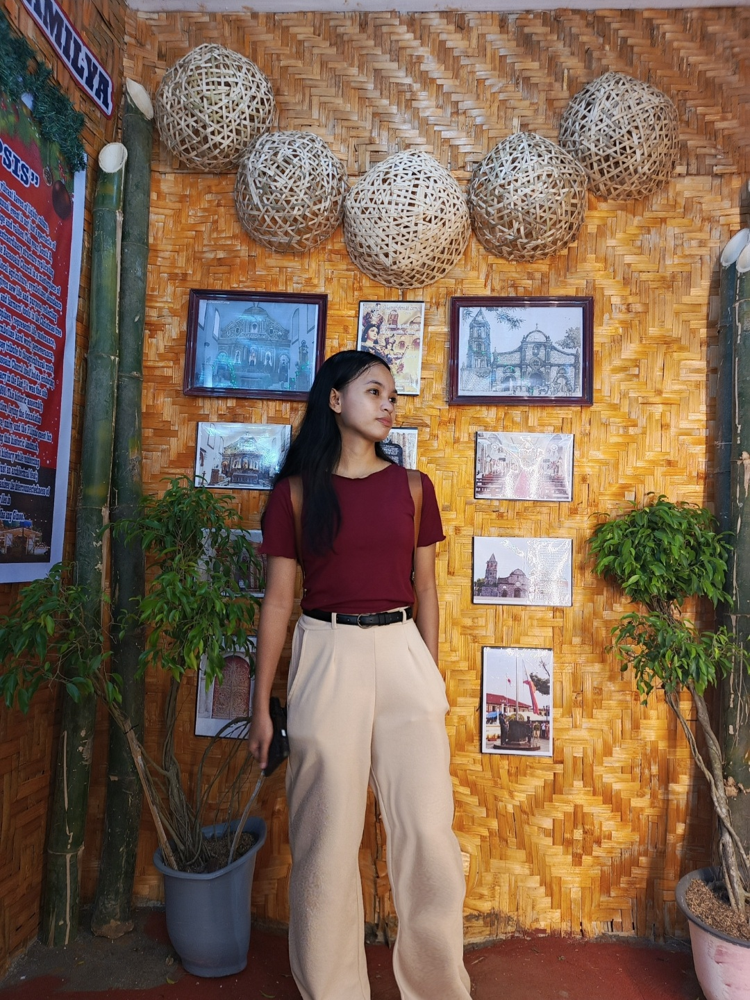
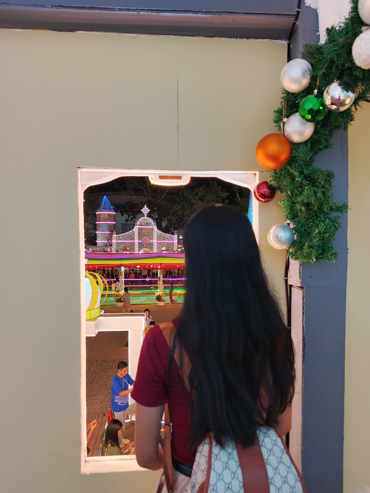
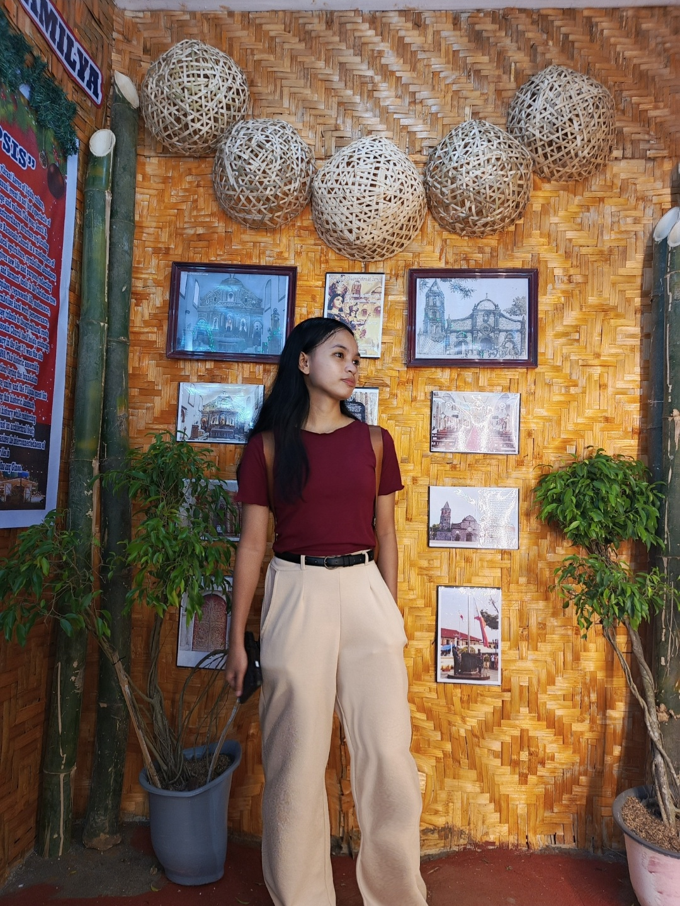

Hi, It's me
Angellie G. Jerusalem
A student taking
Bachelor of Science in Computer Science
Learn MoreJerusalem's Website
Home Page
Bachelor of Science in Computer Science
Learn More 



I’m a quiet person. I get energy from spending time by myself. I love reading books or listening to music. I don’t really like big parties, but I enjoy hanging out with a few close friends in a small group. Music is like my escape. It’s like the music playing in my head as I go through life. I like to listen to all kinds of music, from the pretty sounds of classical music to the loud and exciting music of punk rock. What I listen to depends on how I’m feeling. Sometimes I need something calm and peaceful, and other times I want something loud and energetic. Music helps me understand my feelings and connect with the world, even if it’s just through my headphones. I’m still figuring things out, but I’m learning to be happy with being quiet and finding joy in peaceful moments. Music is always with me, and I’m thankful that it helps me connect with the world, even when I prefer to watch from the sidelines.